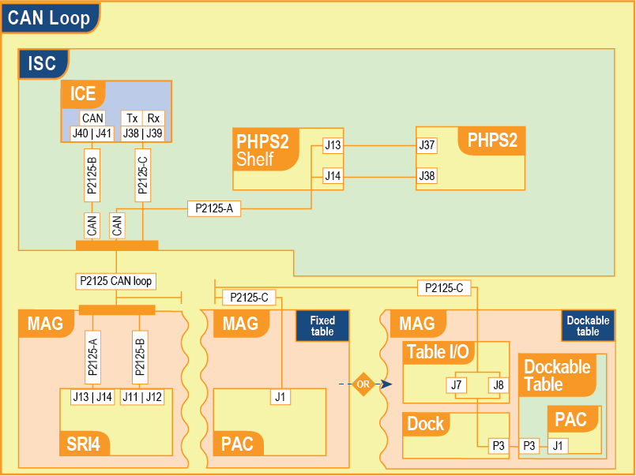
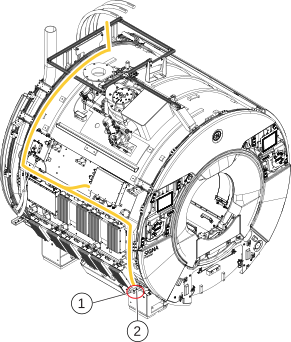
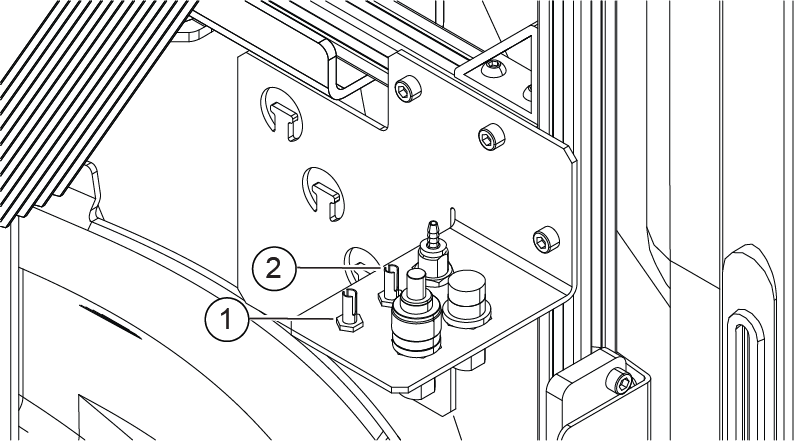
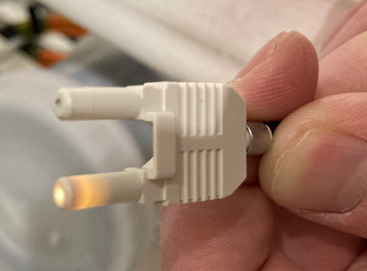
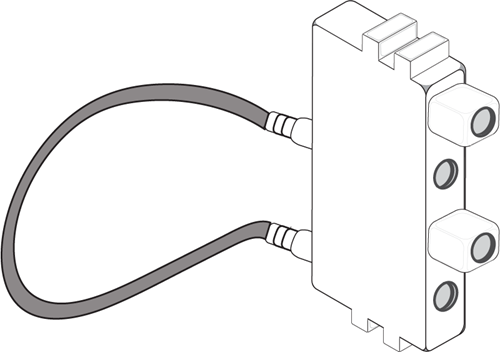
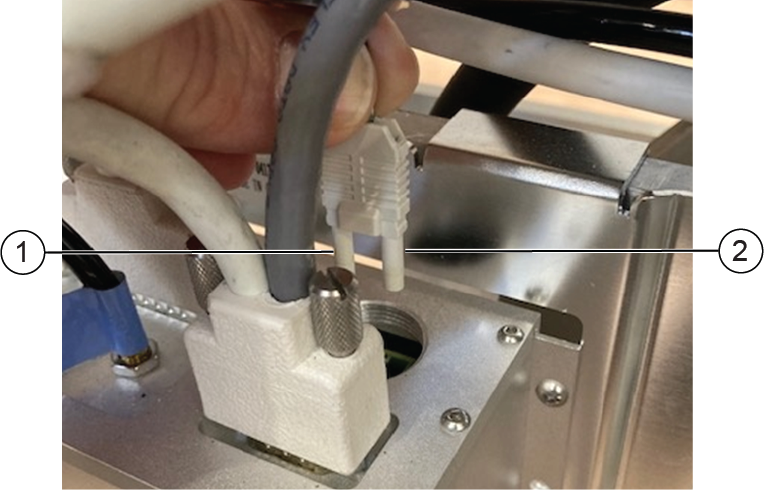
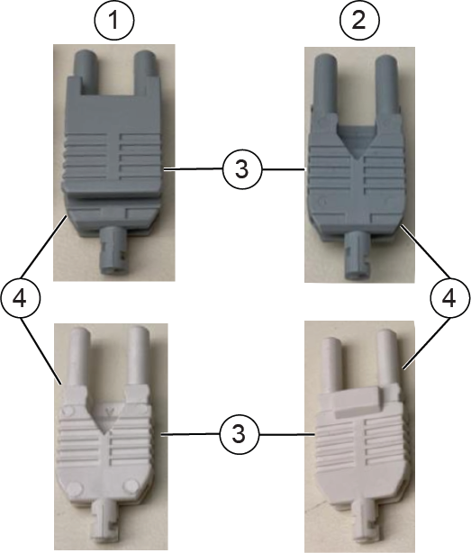
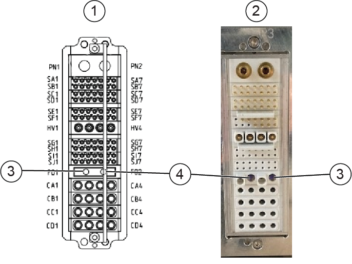
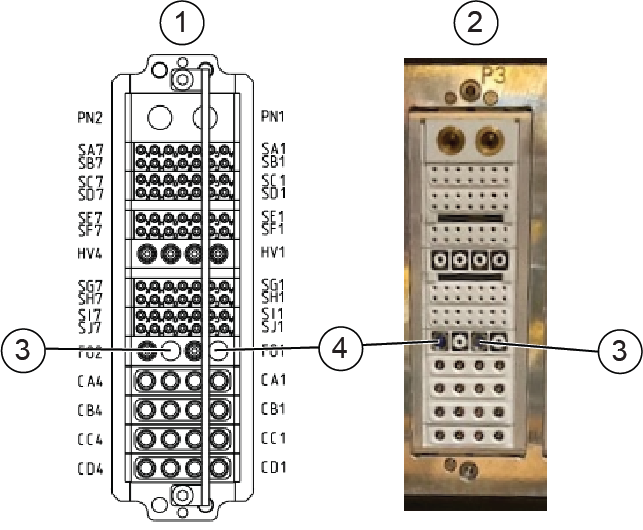

- 00000018WIA30345CA0GYZ
- id_20428841.23
- Sep 16, 2025 3:48:44 AM
Troubleshooting the fiber PAC connections for the dockable table
Steps to determine why the wired Physiological Acquisition Controller (PAC) in the dockable table is not communicating with the Integrated Control Engine (ICE).
Overview
This topic describes how to troubleshoot fiber optic communication issues between the dockable table installed Physiological Acquisition Controller (PAC) and the Integrated Control Engine (ICE) module by outlining the fiber optic communication path and the various connections on the table, dock, magnet, and Integrated System Cabinet (ISC).
| Tools and test equipment | |||
|---|---|---|---|
| Item | Quantity | Part number | Manufacturer |
| Dockable Table Fiber Optics Loopback Tester [FRU] | 1 | 5829963 | - |
| DVMR Service Cable Hardware Kit which includes Fiber Optic Plastic Loopback Cable 5160691 [FRU] | 1 | 5402308 | - |
Wiring diagram

Diagnostic tests that can help troubleshoot
- Doing a Physiological Acquisition Controller (PAC) manual test - Integrated Control Engine (ICE) to PAC.
- Doing Physiological Acquisition Controller (PAC) diagnostics.
- Doing the Signal Processing Unit (SPU) to Physiological Acquisition Controller (PAC) IF loopback test. This test requires the Dockable Table Fiber Optics Loopback Tester (5829963) or the Fiber Optic Plastic Loopback Cable (5160691).
- Doing the Signal Processing Unit (SPU) to Physiological Acquisition Controller (PAC) loopback diagnostic.
- Doing the Signal Protection Unit (SPU) to Field Programmable Gate Array (FPGA) loopback test.
Troubleshooting steps
- Make sure you have the correct ICE.
6200100-110 has a stronger transmitter for the dockable table when compared to 6200100-10. The FRU manual was previously not clear about the difference between 6200100-110 versus 6200100-10.
- Make sure J7 and J8 are not swapped at the input/output panel (side of magnet). Make sure the color scheme on both sides matches.
- J7 - Gray connector from dock, gray J7 connector, and gray connector from P2125 cable.
- J8 - Blue connector from dock, blue J8 connector, and blue connector from P2125 cable.
Figure 2. P2125 cable magnet route (yellow) to table I/O 
1 J7 (gray) B-Rx 2 J8 (blue) A-Tx Figure 3. Table I/O bracket fiber optic connections 
1 J7 (gray) B-Rx 2 J8 (blue) A-Tx
- Inspect the end of male fiber connectors to make sure the fiber is flush with connector housing and not recessed. The example below shows the fiber not flush with the end of the connector.
Figure 4. Fiber is not flush with the end of the connector 
- Shine a light into each fiber and make sure light follows fiber path from ICE to PAC or you can run the PAC manual test (see Doing a Physiological Acquisition Controller (PAC) manual test - Integrated Control Engine (ICE) to PAC) that will pulse light down the fiber connection from the ICE. Check for no light, dimming, or swapped connections.
- This will make sure there are no kinks or damage to the fiber cable along the path.Note Some P2125 fiber bundles contain spare fiber cable for use with a PAC or Scan Room Interface (SRI) that can be used as a replacement if you do find a damaged cable.
- This also makes sure a cable or panel is not made incorrectly by swapping Rx (gray) and Tx (blue).
- If available, use the Dockable Table Fiber Optics Loopback Tester (5829963) and insert it into the P3 dock connection (see Connection 3: P3 dock connection). Then, run the test sequence in Doing the Signal Processing Unit (SPU) to Physiological Acquisition Controller (PAC) IF loopback test. For this test, the cables connected to the ICE at J38 and J39 remain in place. This will determine if the issue is in the table.
Figure 5. Dockable Table Fiber Optics Loopback Tester 
- If available, use the Fiber Optic Plastic Loopback Cable (5160691) and insert it into the table I/O or the ICE module directly to isolate the fiber cables. Then, run the test sequence in Doing the Signal Processing Unit (SPU) to Physiological Acquisition Controller (PAC) IF loopback test.
- This will make sure there are no kinks or damage to the fiber cable along the path.
- Use the figures that follow to make sure the Tx and Rx connections are correct, based off of the ICE module controlling the communication link.
The fiber path:
Figure 6. Connection 1: fiber optic connector to the PAC (tab in front, "V" to back) 
1 B-Rx 2 A-Tx Figure 7. Connector types 
1 Front side 2 Back side (V-shaped notch) 3 B-Rx 4 A-Tx Figure 8. Connection 2: P3 dockable table connection 
1 Table interior 2 Table exterior 3 A-Tx 4 B-Rx Figure 9. Connection 3: P3 dock connection 
Note If available, use the Dockable Table Fiber Optics Loopback Tester (5829963) to test from the dock connector to the ICE.1 Dock interior 2 Dock exterior 3 B-Rx 4 A-Tx Figure 10. Connection 4: table I/O bracket fiber optic connections Note If available, use the Fiber Optic Plastic Loopback Cable (5160691) to test from the table I/O bracket to the ICE.1 J7 (gray) B-Rx 2 J8 (blue) A-Tx Figure 11. Connection 5: PAC fiber connection on the ICE Note V-notch on the connector will be facing the ground.Note If available, use the Fiber Optic Plastic Loopback Cable (5160691) to test from the ICE.1 J38 A-Tx 2 J39 B-Rx